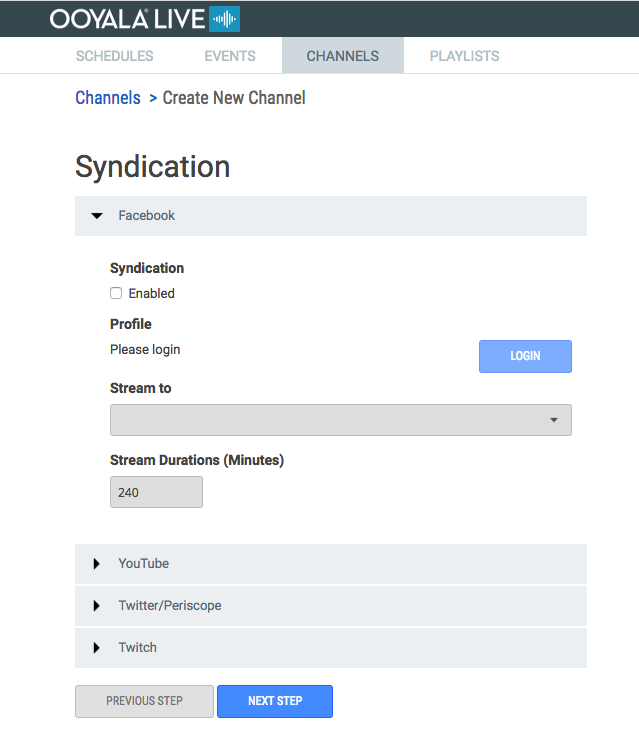

Ooyala Live supports syndication of live video to several social media video
platforms.
Any prerequisites for completing the task.
Complete the Syndication Setup page and click Next
Step.
| General Setup Page |
Considerations |
|

|
Important:
- Live Syndication only works with the Ooyala Package
as the Packaging Partner and Ooyala
Encode as the Encoding Partner.
- A channel must be stopped to enable syndication.
- Server Side Ad Insertion (SSAI) is not supported by Ooyala Live syndication
to social media.
- Enabling social media syndication does not start syndicating the stream. You
must click start next to an enabled social media stream to start syndicating
to a social media platform.
- Anything streaming on the channel is syndicated to any social media that has
been enabled and is running. Schedules and events don't impact what is being
syndicated.
- Ad-hoc channels that have scheduled events automatically stop 30 minutes
after the last scheduled event. Any syndication that is running on the
ad-hoc channel is stopped when the channel is stopped.
- Syndication to a 24x7 channel runs continuously until the syndication stream
is stopped or the channel is stopped. Facebook enforces a 240 minute maximum
time limit for live syndication.
- You can enable syndication to social media as part of creating a new
channel.
- You don't need stop your channel to stop and start syndicating a social
media stream. Once your social media is enabled, you can start and stop
syndicating to each social media stream without stopping your channel.
|
The final step to creating a channel is
Create Channel. Click any of the
steps below to read more about them.